Information Processing
Like other statistical modelling software, the high-level purpose of
macpan2 is to process data sources (top-left) into results
(bottom-left). In the case of macpan2, this processing is
done using compartmental modelling (right). The major steps of
information processing are numbered in the diagram, and we describe each
of these.
- Information processing begins with accessing and preparing numerical
information from various data sources, with the output being standard
numerical R objects. Depending on the nature of the analysis to follow,
this information could include default values for parameters
(e.g. transmission rate), initial values for the state variables
(e.g. initial number of infectious individuals), operational schedules
(e.g. timing of lockdown events or vaccine roll-out schedules), and data
for model fitting (e.g. time series of hospital utilization). This step
could involve connecting to real-time surveillance platforms or reading
in static data files. There is not any functionality within
macpan2for conducting this step –macpan2does not try to reinvent the wheel in data access and preparation. - The structure of a compartmental model is defined in one of three
ways. In all cases the output is ultimately a model simulator.
- (2a) A model is chosen from a model library and read into
R, optionally updating the model structure using an engine-agnostic model specification language. - (2b) A model is written from scratch using the engine-agnostic model specification language.
- (2c) A model is written from scratch using one of the engine-specific model specification languages. These three are alternatives, in that if 2a is chosen then 2b and 2c are automatically executed and if 2b is chosen that 2c is automatic. The choice here is just how close (2c) or far (2a) from the actual computation engine do you want to be when specifying models. There are several considerations when choosing a model specification workflow when deciding which alternative to use. No matter which of these approaches is taken, the output of step 2 is a model simulator that can be used to generate modelling outputs like simulated incidence time-series or reproduction numbers.
- (2a) A model is chosen from a model library and read into
- Although model simulators come with default initial values so that they can be used immediately, typically one would like to modify these values without needing to edit the model specifications from step 2. There are two main use-cases involving such numerical modifications to the model simulators: In order to formally calibrate model parameters by fitting the model to observed time-series data and/or modifying default parameter values to reflect a what-if scenario. In both use-cases, a model simulator is used as input and another model simulator is produced as output.
- Once the model defining and numerical initialization steps have been completed, model outputs are produced in long-format data frames.
- Finally these model outputs are incorporated into forecasts, plots,
reports, and diagnostics using standard tools outside of
macpan2.
Modularity
Modularity is a key principle of macpan2 design in a few
ways.
First, macpan2 is meant to plug into standard R
workflows for data pre-processing and simulation post-processing. There
is very little functionality in macpan2 for configuring how
data are prepared as input and modelling outputs are processed. Instead,
macpan2 accepts standard data objects (data frames,
matrices, vectors) and returns simulations as long-format data frames
that can be processed using standard tools like dplyr and
ggplot2. This design principle is illustrated in the
architecture diagram above that has blue steps representing standard
non-macpan2 workflows and red steps representing workflows
that depend on macpan2 data structures and objects. The
challenges of building the red steps is big enough that we prefer to
avoid reinventing the wheel of pre- and post-processing.
Second, macpan2 uses an engine plug-in architecture.
Models defined in the engine-agnostic
model specification language can be rendered in a particular
computational engine so that multiple computational approaches can be
used to generate modelling outputs for a single model definition. This
can be useful if different model outputs are more efficient or
convenient for different computational approaches. For example, engines
such as TMB that are capable of automatic differentiation are great for
fast optimization of parameters and for computing
in models with arbitrary complexity, whereas other engines such as
Adaptive Tau are better at stochastic simulation techniques like the
Gillespie algorithm. Sometimes an engine will be unable to generate a
particular output at all or with sufficient difficulty on the part of
the user so as to render the use-case practically impossible. For
example, it is not possible to conveniently utilize differential
equation solvers in the TMB engine, limiting it to Euler or simple
RK4-type solvers. Being able to swap out the TMB engine for one based on
deSolve (or other similar package) would allow for more
convenient and accurate solutions to differential equations without
having to leave macpan2.
Third, TODO: describe how the model specification language can be used to build up models modularly (e.g. swap out alternative state-updaters as discussed above but also add in model structures like age-groups and spatial structure to a simple unstructured model)
General Dynamic Simulation with TMB
One can define a generic set of update steps that are iterated to produce a dynamic simulation model in TMB, and that can be used to generate model simulations.
This part of the package is general, stable, and flexible. It also meets many modellers where they are, which is with the ability to write down a set of transitions/state updates.
But it is not convenient if you would just like to simulate from it, which is what the model library is for.
Model Library
("starter_models"
|> mp_tmb_library("sir", package = "macpan2")
|> mp_simulator(time_steps = 10, outputs = "I")
|> mp_trajectory()
)## matrix time row col value
## 1 I 1 0 0 1.098000
## 2 I 2 0 0 1.205169
## 3 I 3 0 0 1.322276
## 4 I 4 0 0 1.450133
## 5 I 5 0 0 1.589599
## 6 I 6 0 0 1.741573
## 7 I 7 0 0 1.906995
## 8 I 8 0 0 2.086833
## 9 I 9 0 0 2.282085
## 10 I 10 0 0 2.493761TODO:
Calibration
We will build a function, mp_calibrate, which takes (1)
an object for simulating model trajectories and (2) other information
for calibrating certain quantities of this model. This second type of
information is detailed in the following sections. The output of
mp_calibrate should be another object for simulating model
trajectories that contains new default parameter values given by fits
and additional stochasticity resulting from parameter estimation
uncertainty.
A big question with calibration is do we want there to be an engine-agnostic DSL layer, or do we just want it to make sense for engines where it makes sense? I think the latter, because otherwise we are making things difficult. We can try to be wise making reusable calibration machinery across engines if it comes to that.
Specifying Data to Fit
A data frame (or data frames) containing observed (possibly uneven) time series to compare with model simulations. What form should this data frame take?
One option is the same format as the output of
mp_trajectory. This would have several benefits.
- Consistency with input and output formats, making it a little easier to learn.
- Easy to manipulate output into input for testing calibration functionality.
- Possibly simpler argument list to
mp_calibratebecause we would just relate the observed data to simulated data with the same name, of course we would still need an interface for distributional assumptions. - Naturally handles missing values
The main disadvantage of this is that format could differ from the indexed vectors discussed below. But this disadvantage should be fixable by having a way to convert indexed vector lists to the ‘long-matrices’ format. Actually yes … this should be totally fine. So the general design is to have a generic S3 method for producing a ‘long-matrices’ data frame.
Specifying Distributional Assumptions
Probably should be a few ways to do this depending on how many
different assumptions need to be made. At one extreme every observation
gets the same distribution, which is easily specified in an argument to
mp_calibrate. At the other extreme each observation gets
its own distribution (including distributional parameters like spread
and shape), which could be specified by adding additional columns to the
data frame with observed values. Designs for interfaces for use cases
that are somewhere between these two extremes seem less obvious.
Specifying Parameters to Fit
There are two kinds of parameters to fit.
- Existing quantities to be fitted (e.g.
beta, initial number of susceptible individualsS). - Creating new quantities to be fitted (e.g. distributional scale parameters declared along with distributional asumptions.
The scale (e.g. log, logit) on which to fit these parameters must also be specified.
The new distributional parameters should go into a new indexed vector
called something like distributional_parameters. (TODO:
more general name for new parameters that are part of the observation
model, e.g. convolution kernel parameters).
Alternative Trajectory Solvers
Let be the state vector and be the vector of per-capita flow rates. Let and be the vectors of from and to states – that is () is the vector the same length of containing the elements of associated with the from (to) state for each flow. Therefore, the th flow is from to at per-capita rate .
The other way to think about it is that for a single flow, is the from state, is the to state, and is the per-capita flow rate.
- Euler
- Inflow:
- Outflow:
- Mean Euler-Multimomial
- Inflow
- Outflow: $$
outflow ~ group_sums(state * flow_rates, from, state)Vectors in the TMB Engine
This is a TMB-engine-specific warm-up to model structure.
state_labels = c("S", "I", "R")
flow = data.frame(
rate = c("infection", "recovery")
, from = c("S" , "I" )
, to = c("I" , "R" )
)
sir = mp_tmb_model_spec(
before = list(
state[S] ~ N - 1
, state[I] ~ 1
, state[R] ~ 0
)
, during = list(
flow_rate[infection] ~ beta * state[S] * state[I] / N
, flow_rate[recovery] ~ gamma * state[I]
, state ~ state + group_sums(flow_rate, to, state) - group_sums(flow_rate, from, state)
)
, default = list(
state = mp_zero_vector(state_labels)
, flow_rate = mp_zero_vector(flow$rate)
, N = 100
, beta = 0.25
, gamma = 0.1
)
, integers = list(
from = mp_positions(flow$from, state_labels)
, to = mp_positions(flow$to , state_labels)
)
)
(sir
|> mp_simulator(time_steps = 10, outputs = "I")
|> mp_trajectory()
)## matrix time row col value
## 1 state 1 I 1.147500
## 2 state 2 I 1.316046
## 3 state 3 I 1.508417
## 4 state 4 I 1.727685
## 5 state 5 I 1.977228
## 6 state 6 I 2.260727
## 7 state 7 I 2.582154
## 8 state 8 I 2.945748
## 9 state 9 I 3.355960
## 10 state 10 I 3.817384Model Structure and Bookkeeping
Structured models are combinations of simpler modular model components. For example one might combine an SIR model with an age-group contact model to produce an age structured model. The modular model components are called atomic models.
Structure in Expressions
Models are composed of expression lists. Each expression in an unstructured model can be converted into a structured expression to create a structured model. For example, the following unstructured expression defines the rate at which new infections emerge.
infection ~ beta * S * I / NEach symbol in this expression has a certain type within a structured
model, and this type determines how it gets translated into a structured
expression. The simplest structured model is one that collects
S and I into a state vector with
elements S and I. With this interpretation of
the S and I symbols, the structured infection
expression gets translated internally to the following.
infection ~ beta * state[S] * state[I] / NHere S and I become symbols for extracting
subsets of the state vector. In this case the expression
itself remains a scalar expression but two of the scalars are obtained
by extracting subsets of the state vector. It won’t take
much imagination to think of examples where multiple paths to infection
are required, and therefore the single scalar-valued infection
expression will be insufficient.
We will have a vector-valued expression, for example, in a model with
an expanded state vector that tracks the geographic location of
S and I individuals. For example, a two patch
model with an east and west patch would
involve a four-dimensional state vector with the following elements:
S.east, S.west, I.east, and
I.west. In this case we now have two scalar-valued
infection expressions.
infection[east] ~ beta * state[S.east] * state[I.east] / N
infection[west] ~ beta * state[S.west] * state[I.west] / NWith two patches it is fine to write out all scalar-valued infection expressions, but with more patches and with different types of structure (e.g. age groups, symptom status, hospitalization, immunity status, etc …) it will become crucial to have software that handles the bookkeeping internally.
To see how easy this can be, note that this two-patch infection
expression can be powerfully and compactly expressed as our original
unstructured expression, infection ~ beta * S * I / N,
where S = c(state[S.east], state[S.west]) and
I = c(state[I.east], state[I.west]).
Why is this powerful? Because it separates the math of the dynamic
mechanism, infection ~ beta * S * I / N, from the
bookkeeping required in structured models where the same mechanism is
applied again and again to different model strata. This is often how
modellers think. For example, I might have a location-structured SIR
model that I need to expand to be both age- and location-structured. In
this case, infection is still the same process, whereby a susceptible
individual contacts an infectious individual to create a flow from
susceptible individuals to infectious individuals. The same math applies
to all strata of the model. The boring but necessary part is to connect
the math to the bookkeeping associated with the model structure, and so
software should focus on making these bookkeeping changes as easy as
possible and with minimal changes required to the underlying
mathematical expressions.
Let’s look at more examples of infection, and watch the bookkeeping
get more annoying. In an age-stratified model with two age groups, we
now get four scalar-valued infection expressions of the form
infection ~ beta * S * I / N.
infection[young.young] ~ beta[young.young] * state[S.young] * state[I.young] / N[young]
infection[young.old] ~ beta[young.old] * state[S.young] * state[I.old] / N[old]
infection[old.young] ~ beta[old.young] * state[S.old] * state[I.young] / N[young]
infection[old.old] ~ beta[old.old] * state[S.old] * state[I.old] / N[old]Here the first expression is for a young individual infecting an old individual, the second is for an old individual infecting a young individual, etc … Things get worse if we have two age groups in two patches.
infection[young.young.east] ~ beta[young.young.east] * state[S.young.east] * state[I.young.east] / N[young.east]
infection[young.old.east] ~ beta[young.old.east] * state[S.young.east] * state[I.old.east] / N[old.east]
infection[old.young.east] ~ beta[old.young.east] * state[S.old.east] * state[I.young.east] / N[young.east]
infection[old.old.east] ~ beta[old.old.east] * state[S.old.east] * state[I.old.east] / N[old.east]
infection[young.young.west] ~ beta[young.young.west] * state[S.young.west] * state[I.young.west] / N[young.west]
infection[young.old.west] ~ beta[young.old.west] * state[S.young.west] * state[I.old.west] / N[old.west]
infection[old.young.west] ~ beta[old.young.west] * state[S.old.west] * state[I.young.west] / N[young.west]
infection[old.old.west] ~ beta[old.old.west] * state[S.old.west] * state[I.old.west] / N[old.west]This still isn’t so bad, as we just have the first four expressions
for east and the last four for west. But now
let’s introduce two symptom status categories: mild and
severe.
infection[young.young.east.mild.mild] ~ beta[young.young.east.mild.mild] * state[S.young.east] * state[I.young.east.mild] / N[young.east]
infection[young.young.east.mild.severe] ~ beta[young.young.east.mild.severe] * state[S.young.east] * state[I.young.east.severe] / N[young.east]
infection[young.young.east.severe.mild] ~ beta[young.young.east.severe.mild] * state[S.young.east] * state[I.young.east.mild] / N[young.east]
infection[young.young.east.severe.severe] ~ beta[young.young.east.severe.severe] * state[S.young.east] * state[I.young.east.severe] / N[young.east]
infection[young.old.east.mild.mild] ~ beta[young.old.east.mild.mild] * state[S.young.east] * state[I.old.east.mild] / N[old.east]
infection[young.old.east.mild.severe] ~ beta[young.old.east.mild.severe] * state[S.young.east] * state[I.old.east.severe] / N[old.east]
infection[young.old.east.severe.mild] ~ beta[young.old.east.severe.mild] * state[S.young.east] * state[I.old.east.mild] / N[old.east]
infection[young.old.east.severe.severe] ~ beta[young.old.east.severe.severe] * state[S.young.east] * state[I.old.east.severe] / N[old.east]
infection[old.young.east.mild.mild] ~ beta[old.young.east.mild.mild] * state[S.old.east] * state[I.young.east.mild] / N[young.east]
infection[old.young.east.mild.severe] ~ beta[old.young.east.mild.severe] * state[S.old.east] * state[I.young.east.severe] / N[young.east]
infection[old.young.east.severe.mild] ~ beta[old.young.east.severe.mild] * state[S.old.east] * state[I.young.east.mild] / N[young.east]
infection[old.young.east.severe.severe] ~ beta[old.young.east.severe.severe] * state[S.old.east] * state[I.young.east.severe] / N[young.east]
infection[old.old.east.mild.mild] ~ beta[old.old.east.mild.mild] * state[S.old.east] * state[I.old.east.mild] / N[old.east]
infection[old.old.east.mild.severe] ~ beta[old.old.east.mild.severe] * state[S.old.east] * state[I.old.east.severe] / N[old.east]
infection[old.old.east.severe.mild] ~ beta[old.old.east.severe.mild] * state[S.old.east] * state[I.old.east.mild] / N[old.east]
infection[old.old.east.severe.severe] ~ beta[old.old.east.severe.severe] * state[S.old.east] * state[I.old.east.severe] / N[old.east]
infection[young.young.west.mild.mild] ~ beta[young.young.west.mild.mild] * state[S.young.west] * state[I.young.west.mild] / N[young.west]
infection[young.young.west.mild.severe] ~ beta[young.young.west.mild.severe] * state[S.young.west] * state[I.young.west.severe] / N[young.west]
infection[young.young.west.severe.mild] ~ beta[young.young.west.severe.mild] * state[S.young.west] * state[I.young.west.mild] / N[young.west]
infection[young.young.west.severe.severe] ~ beta[young.young.west.severe.severe] * state[S.young.west] * state[I.young.west.severe] / N[young.west]
infection[young.old.west.mild.mild] ~ beta[young.old.west.mild.mild] * state[S.young.west] * state[I.old.west.mild] / N[old.west]
infection[young.old.west.mild.severe] ~ beta[young.old.west.mild.severe] * state[S.young.west] * state[I.old.west.severe] / N[old.west]
infection[young.old.west.severe.mild] ~ beta[young.old.west.severe.mild] * state[S.young.west] * state[I.old.west.mild] / N[old.west]
infection[young.old.west.severe.severe] ~ beta[young.old.west.severe.severe] * state[S.young.west] * state[I.old.west.severe] / N[old.west]
infection[old.young.west.mild.mild] ~ beta[old.young.west.mild.mild] * state[S.old.west] * state[I.young.west.mild] / N[young.west]
infection[old.young.west.mild.severe] ~ beta[old.young.west.mild.severe] * state[S.old.west] * state[I.young.west.severe] / N[young.west]
infection[old.young.west.severe.mild] ~ beta[old.young.west.severe.mild] * state[S.old.west] * state[I.young.west.mild] / N[young.west]
infection[old.young.west.severe.severe] ~ beta[old.young.west.severe.severe] * state[S.old.west] * state[I.young.west.severe] / N[young.west]
infection[old.old.west.mild.mild] ~ beta[old.old.west.mild.mild] * state[S.old.west] * state[I.old.west.mild] / N[old.west]
infection[old.old.west.mild.severe] ~ beta[old.old.west.mild.severe] * state[S.old.west] * state[I.old.west.severe] / N[old.west]
infection[old.old.west.severe.mild] ~ beta[old.old.west.severe.mild] * state[S.old.west] * state[I.old.west.mild] / N[old.west]
infection[old.old.west.severe.severe] ~ beta[old.old.west.severe.severe] * state[S.old.west] * state[I.old.west.severe] / N[old.west]This is intense. The names in square brackets get much less clear in
several ways as the model gets more structured. This lack of clarity
makes it difficult to see a variety of model assumptions by looking at
scalar-valued expressions. The infection and
beta vectors depend on two age categories and two symptom
statuses, but only one location. This is because young people can infect
old people (and vice versa), because mildly infectious people can cause
severe infection (and vice versa), and because infectious people in the
east cannot infect people in the west (and vice versa). For labels
associated with two ages, what does the first age mean, relative to the
second age? To discover this you need to know to look at the ages
associated with the S and I states, and once
you do this you can see that the first age category is associated with
the susceptible individual and the second with the infectious
individual. There is a related issue with symptom status, but it is
expressed differently because S individuals are not
structured by symptom status. In this case we match the second symptom
status associated with infection and beta to
the symptom status of the I states, which means that the
first symptom status implicitly refers to the status of the newly
infected individuals and not the infectious individuals. Another way to
look at this last issue is that I boxes play two different
roles. The first role is as an individual that infects an S
individual, and the second is as the individual that that S
individual becomes after it is infected. None of this is obvious from
the scalar-valued expressions above, and it is difficult to imagine a
clearer way to explicitly write each expression.
Our approach is to do the bookkeeping in a different way. In particular we believe that a constructive approach to structure provides a more comprehensible description, as we describe next. In brief, we believe that a grammar for specifying the steps associated with adding structure can be clearer than a description of the final structured model.
Constructive Descriptions of Model Structure
The first step to being more constructive is to have a better
representation of the structured vectors. Above we used
dot-concatenation to represent the model strata. For example, in the
two-patch SI model we have both epidemiological status and geographic
location in the state variable names: S.east,
S.west, I.east, and I.west. But
as the state vector gets more structured it becomes more convenient to
describe its variables using an index table, the rows of which describe
each state variable.
state = mp_cartesian(
mp_index(Epi = c("S", "I")),
mp_index(Loc = c("east", "west"))
)
state## Epi Loc
## S east
## I east
## S west
## I west
beta = mp_group(state, "Epi")With this representation we can get subsets of the state vector that represent each epidemiological status.
mp_subset(state, Epi = "S")## Epi Loc
## S east
## S west
mp_subset(state, Epi = "I")## Epi Loc
## I east
## I westCombining Expression Lists
Because expression lists are really just lists of expressions, they can be combined as lists would normally be combined. In this example we keep the dynamics of the si model separate from under-reporting and reporting delay corrections to the raw prevalence (TODO: should really use incidence).
library(macpan2)
si_dynamics = list(
transition_rate = infection ~ beta * S * I / N
, state_update = S ~ S - infection
, state_update = I ~ I + infection
)
reporting_correction = list(
post_processing = reports ~ convolution(I, c(0.5, 0.25, 0.25))
)
si = mp_dynamic_model(
expr_list = macpan2:::ExprList(during = c(si_dynamics, reporting_correction)),
unstruc_mats = list(S = 99, I = 1, beta = 0.25, N = 100)
)
(si
|> mp_dynamic_simulator(time_steps = 10
, mats_to_return = "reports"
, mats_to_save = c("I", "reports")
)
|> mp_trajectory()
)## matrix time row col value
## 1 reports 1 0 0 0.873750
## 2 reports 2 0 0 1.339617
## 3 reports 3 0 0 1.669899
## 4 reports 4 0 0 2.080193
## 5 reports 5 0 0 2.589100
## 6 reports 6 0 0 3.219119
## 7 reports 7 0 0 3.997230
## 8 reports 8 0 0 4.955432
## 9 reports 9 0 0 6.131141
## 10 reports 10 0 0 7.567307